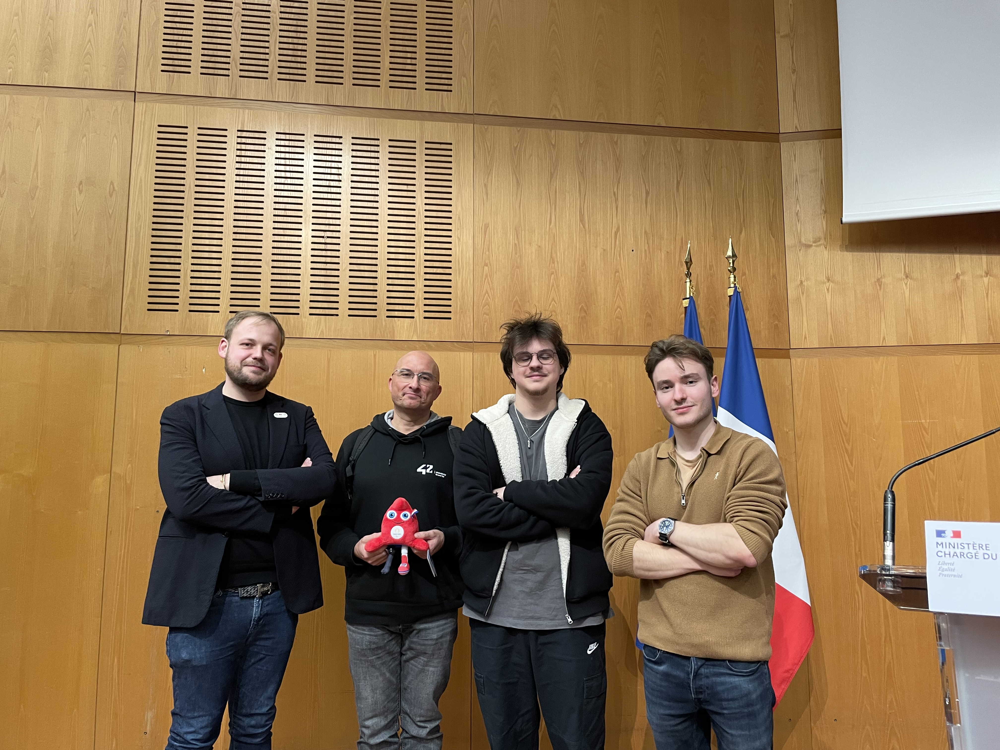
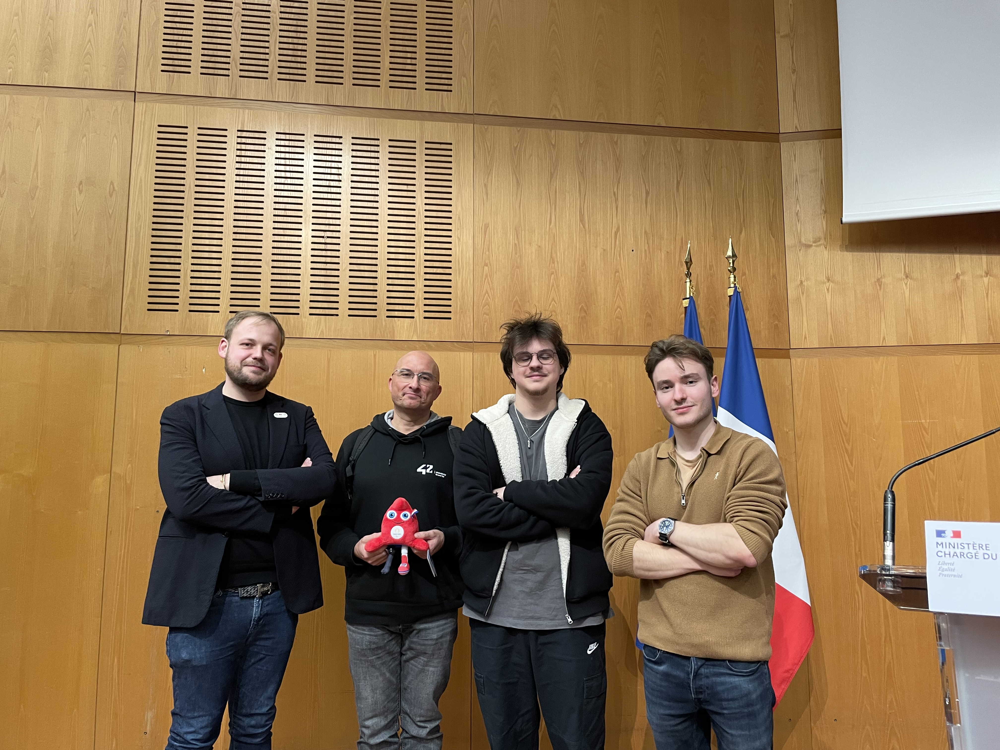

Présentation
Passionné par l’informatique et les technologies, je suis actuellement étudiant à l’École 42 Mulhouse.
Ancien militaire dans les transmissions, j’ai acquis des qualités telles que la rigueur, la discipline le travail en équipe, tout en manipulant des systèmes techniques critiques.
Au fil de mon parcours militaire, j’ai développé un intérêt croissant pour le développement logiciel et les architectures systèmes. Cette curiosité m’a poussé à reprendre mes études afin d’approfondir mes compétences et de me diriger concrètement vers le domaine de la tech.
Je suis à la recherche d’une alternance de 2 ans dans le cadre de la validation du titre RNCP Niveau 7 – Expert en architecture des systèmes d'information, équivalent à un Master (Bac +5).
Sérieux, autonome et motivé, je souhaite m’investir pleinement dans une entreprise pour progresser en systèmes, réseaux, cybersécurité et développement.
Compétences
Programmation
C, C++, Shell scripting (Bash), Python, PHP, programmation orientée objet, gestion mémoire, récursivité, structures de données.
Systèmes & Réseaux
Linux, administration système, réseaux TCP/IP, DNS, routage, sockets, virtualisation (Docker), Git, protocoles radio & transmissions VLF (expérience Marine Nationale).
Algorithmes & IA
Manipulation de piles, tris, listes, arbres, machine à états, optimisation algorithmique.
Développement Web
HTML, CSS, JavaScript, PHP, Fastify, architecture client-serveur, HTTP, création et utilisation d’API, back-end, gestion de base de données (MariaDB), création de serveur web, utilisation de CMS (WordPress).
Graphisme
Manipulation d’images, interaction clavier/souris, boucle d’événements, moteur de rendu simple (cub3D).
Langues
Français (natif), Anglais (niveau B2).
Soft Skills
Discipline, autonomie, esprit d’équipe, adaptabilité, rigueur, gestion de projet, collaboration, gestion de conflits.
Permis de conduire
Titulaire du Permis B
Expériences
École 42 Mulhouse – Tronc Commun
Octobre 2023 – PrésentDéveloppement en C, Shell, algorithmie, réseaux et projets collaboratifs. Préparation au titre RNCP7 « Expert en architecture informatique et systèmes d’information ».
Kaplan Oxford – Séjour linguistique
Janvier 2023 – Juin 2023Perfectionnement de l’anglais, immersion internationale.
Marine Nationale – Transmissions sous‑marines
15 Décembre 2018 – 18 Novembre 2022Maintenance et gestion de systèmes radio VLF, coordination des transmissions sous‑marines, travail en environnement sécurisé.
Pôle Écoles Méditerranée – Formation SIC (BE ‑ SIC)
18 Novembre 2018 – 15 Décembre 2018Formation militaire et technique spécialisée en systèmes d’information et de communication (SIC). Réseaux, télécoms, cybersécurité, administration IT et gestion opérationnelle des transmissions.
Quelques projets 42
Minishell
Création d'un shell personnalisé. Gestion de processus, parsing, redirections, pipes, signaux Unix. Un projet avancé en programmation système.
C Unix Shell
FdF
Rendu en 3D isométrique de maillages à partir de données. Gestion graphique, calculs matriciels, gestion d’événements clavier/souris.
C Algorithmes Graphics
Libft
Reconstruction de fonctions de la bibliothèque standard C. Gestion de mémoire, manipulation de chaînes, rigueur et bonnes pratiques.
C Librairie RigueurHackathons


Organisé par : Hacking Health Camp
🥇 1ᵉʳ Prix – Projet : Synthésanté
Plateforme de veille médicale intelligente destinée à aider les chercheurs, professionnels de santé et institutions à rester à jour sur les dernières avancées scientifiques.
Grâce à une IA avancée, synthesante.com trie, synthétise et priorise les publications scientifiques et les données médicales pertinentes en temps réel.
Visiter Synthésanté 🌐
Voir la publication officielle 🔗

 

Organisé par : Direction Générale des Entreprises
🆠2ᵉ Prix – Projet : “Séjour accessibleâ€
Application web simplifiant l'accès aux restaurants, hébergements et lieux adaptés pour les personnes en situation de handicap. Interface fluide, rapide, accessible.
Objectif : rendre le tourisme plus inclusif en mettant en valeur les établissements accessibles.
Voir la publication officielle 🔗 (Adn tourisme)
Voir la publication officielle 🔗

Événement : Startup Weekend – Mulhouse
🚀 Projet : Réseau social innovant
Création d'une plateforme sociale permettant de segmenter des passionnés selon leurs centres d’intérêt, avec une interface personnalisée et communautaire.
Objectif : favoriser les connexions authentiques en regroupant les utilisateurs autour de leurs passions spécifiques dans un espace numérique sur mesure.